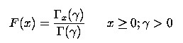
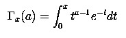

The formula for the cumulative distribution function for the gamma distribution is,

where is the gamma function defined above and is the incomplete gamma function. The incomplete gamma function has the formula.

Example
Here is a code snippet that shows a sample usage.
|
[C#]
ChartSeries series= this.ChartWebControl1.Model.NewSeries("a=2"); for(double i=0;i<=20;i=i+2) { // Calculate Gamma Cumulative function for a points and plot the points in chart control. series.Points.Add (i,Syncfusion.Windows.Forms.Chart.Statistics.UtilityFunctions.GammaCumulativeDistribution(2.0,i)); } series.Type=ChartSeriesType.Spline; series.Text=series.Name; this.ChartWebControl1.Series.Add(series); |
|
[VB.NET]
Dim series As ChartSeries= Me.ChartWebControl1.Model.NewSeries("a=2") For i As Double = 0 To 20 Step 2
' Calculate Gamma Cumulative function for a points and plot the points in chart control. series.Points.Add(i,Syncfusion.Windows.Forms.Chart.Statistics.UtilityFunctions.GammaCumulativeDistribution(2.0,i)) Next i series.Type=ChartSeriesType.Spline series.Text=series.Name Me.ChartControl1.Series.Add(series) |